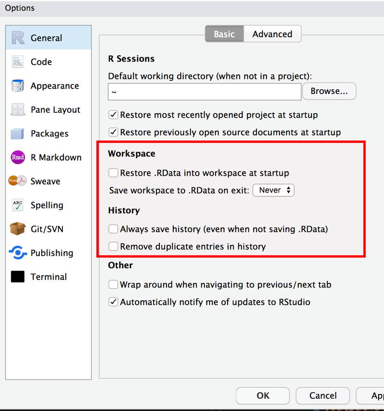
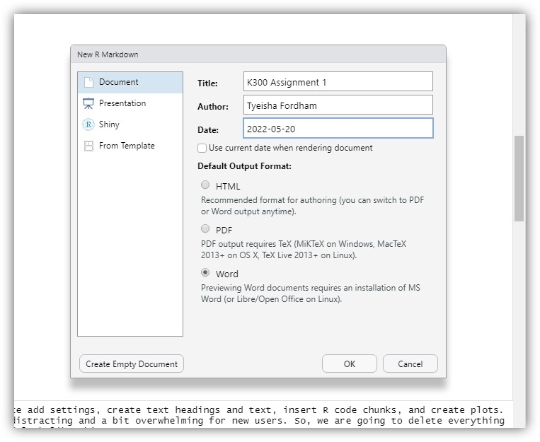

reluctant criminologists
About
blog posts
course materials
reluctant criminologists
Categories
All
(4)
general
(2)
blog posts
Dr. Charles R. Tittle’s intellectual contributions
general
The comments below were delivered in one of two tribute panels dedicated to Dr. Charles R. Tittle’s intellectual and interpersonal contributions to criminology at the 2021 American Society of Criminology…
Mar 11, 2023
Jon Brauer, with Katya Botchkovar and Carter Hay
Welcome to the reluctant criminologists
general
First, this site is intended primarily as a central repository for conveniently sharing our course material and preliminary ideas with students and colleagues. It allows us…
Mar 10, 2023
Jon Brauer and Jake Day
No matching items
course materials

Replication & Reproducibility in Social Science (Graduate-level)
In the fall of 2021, Jon was on the schedule to teach a new course titled “Replication & Reproducibility in Social Science” as a substitute for IU Criminal Justice…

Introduction to Statistics in R for Criminologists
The…
No matching items